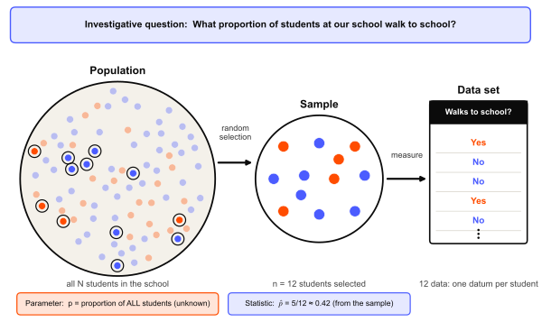
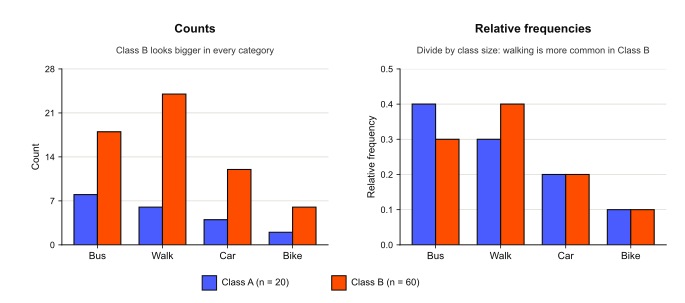
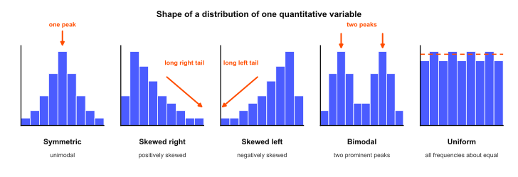
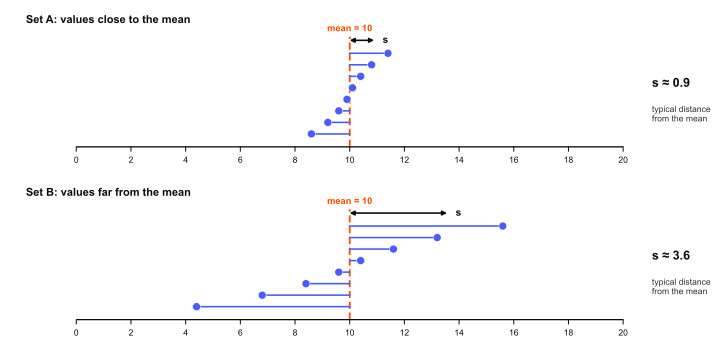
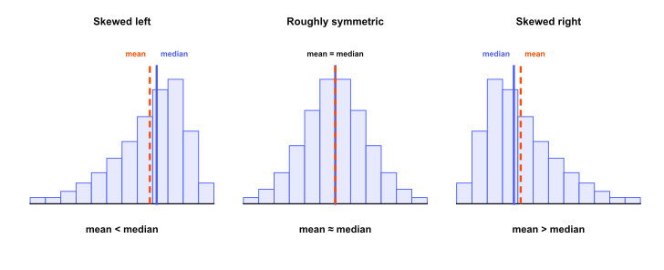
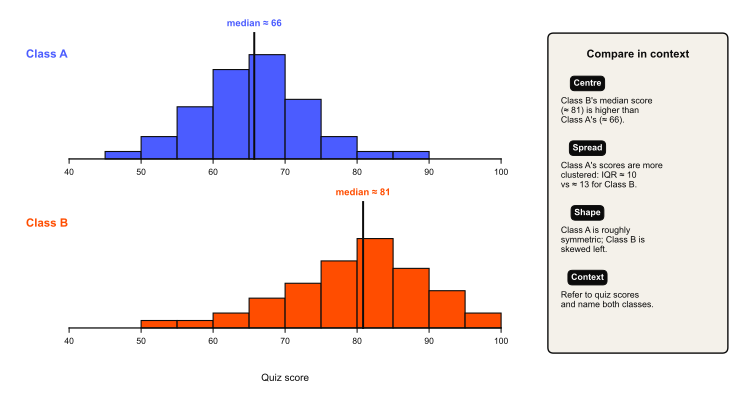
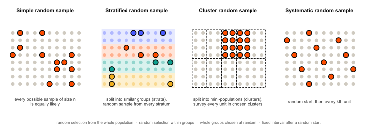
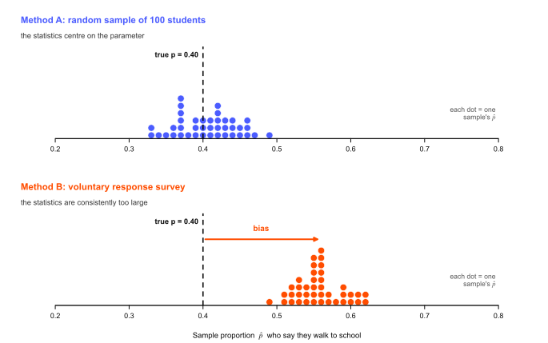
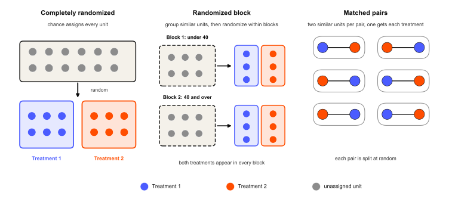

Introducing statistics: what can we learn from data
Taught in: Lesson 1.A.1 · Populations, Samples, & Data
Each dot is one student: dog owners in blue and the others in orange. The outlined dots are the sample.
- The population is all $60$ students, $N=60$. The sample is $12$ of them, $n=12$.
- The parameter $p=0.40$ describes the population. The statistic $\hat{p}$ describes a sample.
- Different samples give different values of $\hat{p}$.
A study collects data from a sample of size $n$ to answer a question about a population of size $N$. The investigative question has a defined purpose and is not changed after seeing the results (1.1.A.1, 1.1.A.4, 1.1.A.5, 1.1.B.1).

- 1.1.A.1A statistical study is a study in which data are collected from a sample to answer an investigative question about a larger population.
- 1.1.A.2Statistical studies are necessary when the population is too large or it is too difficult to collect data from every item or individual in the population.
- 1.1.A.3A datum (singular form of data) is a piece of information about an item or individual. A collection of data is called a data set.
- 1.1.A.4A population consists of all items or individuals of interest. The population size is represented by the symbol N.
- 1.1.A.5A sample selected for study is a subset of the population from which data are obtained. The number of items in the sample, called the sample size, is represented by the symbol n.
- 1.1.A.6Each component of a statistical study and the resulting calculations can be related to an aspect of the corresponding real-world context from which the components were derived. This identification of a statistical result with the corresponding contextual component is what is meant by “in context.”
- 1.1.B.1An investigative question for a specific study should have a defined purpose and should not be changed based on the data analysis or results.
- 1.1.B.2An investigative question should be posed so that the required data can be collected and analyzed.
Variables
Taught in: Lesson 1.A.1 · Populations, Samples, & Data
Each row of the table is one student. The blue bracket groups the categorical variables and the orange bracket groups the quantitative variables.
- A zip code is made of digits but it names a place, so it is a category label, not a quantity.
- Siblings is discrete: it takes a countable number of values.
- Height is continuous: it can take any value in an interval, so it is measured.
A categorical variable takes category names or labels. A quantitative variable takes numerical values for a measured or counted quantity: discrete if countable, continuous if any value in an interval (1.2.B.1, 1.2.B.2, 1.2.C.1, 1.2.C.2).


- 1.2.A.1An observational unit is an item or individual from which a datum is collected.
- 1.2.A.2A variable is a characteristic that may change from one observational unit to another.
- 1.2.A.3Data collected on numerical and categorical variables measured on observational units, including photographs, sounds, videos, and text, can convey meaningful information.
- 1.2.A.4A parameter is a numerical attribute or summary of the variable of interest for a population.
- 1.2.A.5A statistic is a numerical attribute or summary of the variable of interest for a sample. The value of a statistic from a certain sample is often not equal to the unknown value of the population parameter but may provide the basis for making inferences about the population parameter.
- 1.2.B.1A categorical variable, also called a qualitative variable, takes on values that are category names or group labels.
- 1.2.B.2A quantitative variable, also called a numerical variable, takes on numerical values for a measured or counted quantity and generally has units of measure.
- 1.2.C.1A discrete quantitative variable can take on a countable number of values. The number of values may be finite or countably infinite, as with the whole numbers.
- 1.2.C.2A continuous quantitative variable can take on an infinite number of possible values within a given interval. The number of values the variable can take on is measurable but not countable. This variable can take on all possible values between any pair of values.
Tabular representation and summary statistics for one categorical variable
Taught in: Lesson 1.A.2 · Describing a Categorical Variable
Columns show the frequency, the relative frequency in blue, and the percent in orange. The outlined row is the most common category.
- Frequencies add up to the total; relative frequencies add up to $1$.
- $0.45$, $45\%$ and $45$ out of $100$ say the same thing.
- The mode is the category with the largest frequency.
Relative frequency is frequency divided by the total. Proportions, percentages and ratios all provide the same information. Counts and relative frequencies can justify claims in context (1.3.A.2, 1.3.B.1, 1.3.B.2).

- 1.3.A.1A frequency table shows the number of observational units in each category of a categorical variable.
- 1.3.A.2A relative frequency table shows the proportion of observational units in each category of a categorical variable.
- 1.3.B.1Percentages, relative frequencies, and ratios all provide the same information as proportions.
- 1.3.B.2Counts and relative frequencies of categorical variables reveal information that can be used to justify claims about the variables in context.
Graphical representations for one categorical variable
Taught in: Lesson 1.A.2 · Describing a Categorical Variable
Each bar is a category. In the last step the blue bars are class A (n = 40) and the orange bars are class B (n = 100).
- The bars keep the same height whether the axis shows counts or relative frequencies, when the total is the same.
- A pie chart shows each category's share of the whole as the area of a slice.
- Counts depend on the size of the group, so relative frequencies compare groups fairly.
A bar chart shows frequency or relative frequency for each category; a pie chart shows each category as a slice. To compare groups, use the same variable, preferably as relative frequencies (1.4.A.1, 1.4.A.2, 1.4.C.1).


- 1.4.A.1Bar charts, also called bar graphs, display frequencies (counts) or relative frequencies (proportions) for the categories of a single categorical variable. Each bar on a bar chart represents a category of the categorical variable of interest. The height or length of each bar corresponds to the frequency or relative frequency of the observational units in each category.
- 1.4.A.2Pie charts are used to display frequencies (counts) or relative frequencies (proportions) for categorical data. Each slice on a pie chart represents a category of the categorical variable of interest. The area of each slice, as a fraction of the total area, corresponds to the relative frequency of observational units falling within each category. The sum of the slices’ areas together will equal 1, or 100% of the total area.
- 1.4.B.1Graphical representations of a categorical variable reveal information that can be used to justify claims about the variable in context.
- 1.4.C.1Frequency and relative frequency tables, bar charts, and pie charts can be used to compare two or more data sets in terms of the same categorical variable.
Graphical representations for one quantitative variable
Taught in: Lesson 1.A.3 · Describing a Quantitative Variable
The same $20$ values appear in every display. In the histogram each bar covers a bin of minutes and its height counts the values in it.
- A dotplot places a dot for each value, stacking nearly identical values.
- A histogram groups the values into ordered bins; the bar height is the frequency.
- A stem-and-leaf plot keeps every value: the stem is the first digit and the leaf is the last.
Histograms, stem-and-leaf plots and dotplots all show a distribution. A histogram's bars cover bins and their heights show frequency; the bin width changes the picture (1.5.A.1 to 1.5.A.4).

- 1.5.A.1Histograms, stem-and-leaf plots, and dotplots provide a visual representation of the distribution of the values of a quantitative variable. These graphs show the frequency or relative frequency of the quantitative variable values or intervals of values and maintain the natural ordering, smallest to largest, of the quantitative variable.
- 1.5.A.2A histogram places the observed values of the quantitative variable into ordered intervals, or bins, along the horizontal axis. Each bar represents an interval or bin, and the height of each bar shows the frequency or relative frequency of the observations within that interval. Altering the interval widths, or bin widths, can change the appearance of the histogram. Alternatively, a histogram can be constructed with bins on the vertical axis with bars appearing horizontally.
- 1.5.A.3A stem-and-leaf plot splits each value of the quantitative variable into two parts: a “stem” (the first digit or digits) and a “leaf” (usually the single digit after the stem digit or digits). Both stems and leaves are ordered from smallest to largest.
- 1.5.A.4A dotplot represents each value of the quantitative variable by a dot. Each dot is placed above the horizontal or beside the vertical axis corresponding to the value of that observation, with nearly identical values stacked on top of each other.
Descriptions for one quantitative variable distributions
Taught in: Lesson 1.A.3 · Describing a Quantitative Variable
Each panel is the outline of a distribution. In the last step a histogram marks a cluster, a gap and an outlier (the orange bar).
- Skewed right means the right tail is longer; skewed left means the left tail is longer.
- Bimodal distributions have two prominent peaks; a uniform distribution has roughly equal frequencies.
- Clusters are concentrations of values, a gap has no observed data, and an outlier is unusually small or large.
Describe the shape, center and spread of a distribution, and any unusual features such as outliers, gaps or clusters, in context (1.6.A.1 to 1.6.A.6).


- 1.6.A.1Descriptions of the distribution of one quantitative variable include shape, center, and variability (spread) as well as any unusual features such as outliers, gaps, or clusters in context.
- 1.6.A.2The shape of the distribution of one quantitative variable is skewed to the right (positively skewed) if the right tail (toward larger values) is longer than the left. The shape of the distribution is skewed to the left (negatively skewed) if the left tail (toward smaller values) is longer than the right. The shape of the distribution is approximately symmetric if the left half is approximately the mirror image of the right half.
- 1.6.A.3Distributions of one quantitative variable with one main peak are called unimodal. Distributions with two prominent peaks are called bimodal. A distribution in which each frequency or each relative frequency is approximately the same with no prominent peaks is approximately uniform.
- 1.6.A.4Outliers for one quantitative variable are data points that are unusually small or large relative to the rest of the data.
- 1.6.A.5A gap is a region in a distribution between two values in which there are no observed data.
- 1.6.A.6Clusters are concentrations of values usually separated by gaps.
- 1.6.B.1Graphical representations of a quantitative variable may reveal information that can be used to justify claims about the variable in context.
Summary statistics for one quantitative variable (center, spread, outliers)
Taught in: Lesson 1.A.4 · Measures of Center & Spread, Lesson 1.A.5 · Boxplots, Outliers, & Resistance
The orange dot is the value that moves. The orange line is the mean and the blue line is the median.
- When one value moves far away, the mean moves toward it.
- The median changes little because it depends on the middle of the ordered data.
- The standard deviation grows with an outlier; the IQR stays the same.
The median and IQR are resistant to outliers. Because outliers can affect the mean and standard deviation, the median and IQR are preferred for skewed data or data with outliers (1.7.F.1).


- 1.7.A.1Two commonly used measures of center in the distribution of a quantitative variable are the mean and median.
- 1.7.A.2The mean is the sum of all the values divided by the number of values and can be found with and without using technology. For a sample, the mean is denoted by $x$-bar: $\bar{x}=\dfrac{1}{n}\sum_{i=1}^{n}x_i$, where $x_i$ represents the $i$th data point in the sample and $n$ represents the number of data values in the sample.
- 1.7.A.3The median is the middle value when the data set is ordered from smallest to largest and can be found with and without using technology. One common method for determining the median of a data set with an even number of values is to use the mean of the two middle values. A common method for determining the median of a data set with an odd number of values is to use the value in the middle of all the values.
- 1.7.A.4In an ordered data set, the smallest value is the minimum value, and the largest value is the maximum value.
- 1.7.A.5The first quartile, denoted by Q1, is the median value of the lower half of the ordered data set from the minimum value to the position of the median. Approximately 25% of the values in the data set are less than or equal to Q1. The third quartile, denoted by Q3, is the median value of the upper half of the ordered data set from the position of the median to the maximum value. Approximately 75% of the values in the data set are less than or equal to Q3. The second quartile, Q2, is also the median of the data set. Q1 and Q3 form the boundaries for the middle 50% of values in an ordered data set.
- 1.7.A.6The pth percentile is the value that has p% of the data less than or equal to it when the data set is ordered from smallest to largest. The first and third quartiles are the 25th and 75th percentiles, respectively.
- 1.7.B.1Three commonly used measures of variability (or spread) in the distribution of a quantitative variable are the range, interquartile range, and standard deviation.
- 1.7.B.2The range is the difference between the maximum data value and the minimum data value.
- 1.7.B.3The interquartile range (IQR) is the difference between the third and first quartiles: Q3 − Q1.
- 1.7.B.4The standard deviation is a typical deviation of the data values from their mean and can be found with and without using technology. The sample standard deviation is denoted by $s$ and calculated by $s=\sqrt{\dfrac{1}{n-1}\sum(x_i-\bar{x})^2}$, where $x_i$ is the data value, $\bar{x}$ is the mean, and $n$ is the number of data values in the sample. The square of the sample standard deviation, $s^2$, is called the sample variance.
- 1.7.C.1Changing units of measurement affects the values of the calculated statistics.
- 1.7.D.1There are many methods for determining potential outliers. Two methods frequently used are as follows: 1.7.D.1.i An outlier is a value located more than 1.5 × IQR above the third quartile or more than 1.5 × IQR below the first quartile. 1.7.D.1.ii An outlier is a value located more than 2 standard deviations above, or below, the mean.
- 1.7.E.1Summary statistics can be used to compare features of two or more independent samples, including center, variability, shape, and outliers.
- 1.7.F.1The median and IQR are considered a resistant (or robust) measure of center and measure of variability, respectively, because outliers do not greatly (if at all) affect their values. Because outliers can affect their values greatly, the mean is considered a nonresistant (or non-robust) measure of center, and the range and standard deviation are considered nonresistant (or non-robust) measures of variability.
- 1.7.F.2Summary statistics of a quantitative variable may reveal information that can be used to justify claims about the variable in context.
Graphical representations of summary statistics
Taught in: Lesson 1.A.5 · Boxplots, Outliers, & Resistance

The box spans $Q_1$ to $Q_3$ with a line at the median. In the last step the solid orange line is the mean and the dashed line is the median.
- The box holds the middle $50\%$ of the data; its width is the IQR.
- A value beyond $Q_3+1.5\times IQR$ (or below $Q_1-1.5\times IQR$) is an outlier.
- The mean is pulled toward the longer tail, so its position compared with the median shows the skew.
A boxplot shows the five-number summary. For a symmetric distribution the mean and median are close; for skewed right the mean is usually larger than the median, and for skewed left it is usually smaller (1.8.A.2, 1.8.B.1).


- 1.8.A.1A five-number summary is made up of the minimum data value, the first quartile (Q1), the median, the third quartile (Q3), and the maximum data value.
- 1.8.A.2A boxplot is a graphical representation of the five-number summary (minimum, first quartile, median, third quartile, maximum). The box represents the middle 50% of data, with a line at the median and the ends of the box corresponding to the quartiles. Lines (“whiskers”) that represent 25% of the data extend from the first quartile to the minimum and from the third quartile to the maximum. If there are outliers in the data, the whiskers extend to the most extreme data values that are not outliers, and outliers are usually denoted with an asterisk or other symbol.
- 1.8.B.1If a distribution is relatively symmetric, then the values of the mean and median are relatively close to each other. If a distribution is skewed right, then the value of the mean is usually larger than the median. If the distribution is skewed left, then the value of the mean is usually smaller than the median.
Comparisons of the distributions for one quantitative variable
Taught in: Lesson 1.A.6 · Comparing Graphs & Z-Scores
The boxplots share one axis of scores: class A in blue and class B in orange. The $z$-score line puts both tests on the same scale.
- Compare center, spread, shape and unusual features, and say what they mean in context.
- A $z$-score is the number of standard deviations a value is above or below the mean.
- A larger $z$-score means a higher relative position, even when the scales differ.
Compare distributions by center, spread, shape and unusual features, in context. $z=\dfrac{x-\mu}{\sigma}$ compares relative positions (1.9.A.1, 1.9.D.2, 1.9.E.1).


- 1.9.A.1Graphical representations of a quantitative variable can be used to compare important features between two or more distributions of the same quantitative variable. Histograms, back-to-back stem-and-leaf plots, and dotplots may be used to compare center, variability, shape, outliers, clusters, or gaps in two or more distributions. Boxplots may be used to compare center, variability, outliers, and skewness (or symmetry).
- 1.9.B.1A comparison of graphical representations for two or more distributions can include any of the numerical summaries (e.g., mean, standard deviation, etc.).
- 1.9.C.1Multiple quantitative one-variable graphical representations may reveal information that can be used to justify claims about the variable in context.
- 1.9.D.1A standardized score measures the number of standard deviations a data value falls above or below the mean.
- 1.9.D.2A $z$-score is calculated as $\dfrac{x_i-\mu}{\sigma}$, where $x_i$ is the data value, $\mu$ is the population mean, and $\sigma$ is the population standard deviation. A $z$-score measures how many standard deviations a data value is above (positive $z$-score) or below (negative $z$-score) the mean. When the population mean and standard deviation are unknown, the sample mean and standard deviation may be used to determine a $z$-score.
- 1.9.E.1z-scores may be used to compare relative positions of individual values within a distribution or between distributions.
The investigative question revisited and data collection
Taught in: Lesson 1.B.1 · Types of Studies
In the grid a green check means the conclusion is supported and a pink cross means it is not.
- A census records information from all items or individuals in the population.
- An experiment assigns the treatments; in an observational study the treatments are not imposed.
- A random sample supports generalizing to the population; random assignment supports cause and effect.
A random sample allows generalizations about the population it came from; without random selection, generalize only to similar individuals. Random assignment of treatments allows cause-and-effect conclusions (1.10.A.3, 1.10.E.2, 1.10.E.4).


- 1.10.A.1The first component of an investigative question should guide the data collection process and should be phrased in terms of the variable(s) of interest in the study.
- 1.10.A.2The second component of an investigative question should guide the data analysis choice. 1.10.A.2.i In the case of a hypothesis test, the investigative question should make clear the parameter and the direction of the alternative hypothesis (i.e., not equal, greater than, less than, association, not independent). 1.10.A.2.ii In the case of a confidence interval, the investigative question should make clear the parameter and the goal of estimation of that parameter within a range of potential values.
- 1.10.A.3The third component of an investigative question should indicate the type(s) of conclusion(s) applicable from the study. The investigative question should provide the population to which the conclusions will be applicable and, in the case of an experiment that uses random assignment, a cause-and-effect conclusion.
- 1.10.B.1A census consists of recording information from all items or individuals in a population.
- 1.10.C.1An experiment is a study in which a researcher assigns conditions, or treatments, to experimental units to explore an investigative question of interest about the population.
- 1.10.C.2The experimental unit is the observational unit to which the treatment is assigned. When experimental units consist of people, they are sometimes referred to as subjects or participants.
- 1.10.C.3An explanatory variable, or factor, is a variable whose different categories, or levels, are imposed on the experimental units. The different categories, or levels, of the explanatory variable are called treatments. When there is more than one explanatory variable, the combinations of the categories, or levels, of the explanatory variables are called treatments.
- 1.10.C.4A response variable is an outcome measured on each experimental unit after the treatment has been administered.
- 1.10.D.1An observational study is a study where treatments are not imposed. The researcher records the values of the variables of interest in order to explore an investigative question of interest.
- 1.10.D.2A prospective study is one in which the observational units of study are selected at a point in time, and data are gathered both at that time and into the future.
- 1.10.D.3A retrospective study is one in which the observational units of study are selected at a point in time and data from the past are gathered.
- 1.10.D.4A survey is an observational study in which the data are collected from humans using a standard set of questions.
- 1.10.D.5A confounding variable in an observational study provides an alternative explanation for the observed relationship between the explanatory and response variables determined in the study, thereby reducing the possibility of concluding a causal relationship between the explanatory and response variables of interest. To be a confounding variable, a variable must be associated with both the explanatory variable and the response variable.
- 1.10.E.1A sample is considered random when all observational units in the sample are selected from the population using some type of random mechanism, such as a random number generator.
- 1.10.E.2When observational units, or experimental units, in a sample are randomly selected from a population, it is appropriate to make generalizations about the entire population of individuals from which the sample was selected.
- 1.10.E.3A sample is not randomly selected when observational units are deliberately chosen or volunteer themselves to be in the sample.
- 1.10.E.4When observational units, or experimental units, in a sample are not randomly selected from a population, it is appropriate to make generalizations only about a population of individuals that are similar to those used in the study.
Random sampling
Taught in: Lesson 1.B.2 · Random Sampling
Each dot is one unit of the population. The outlined dots are the sample. Green and orange boxes mark strata; gray boxes mark clusters.
- In a simple random sample every sample of size $n$ has the same chance of being selected.
- Stratified: a random sample is taken from each stratum. Cluster: whole randomly chosen clusters are used.
- Systematic: a random starting point, then a fixed interval.
All four are random sampling methods. Each has different characteristics that make it more appropriate for some populations and questions (1.11.A.3 to 1.11.A.6, 1.11.B.1).

- 1.11.A.1Sampling without replacement is a sampling strategy in which an observational unit from a population can be selected only once. The observational unit is not returned to the population before subsequent selections of observational units are made, so there is no chance that the observational unit can be selected again.
- 1.11.A.2Sampling with replacement is a sampling strategy in which an observational unit from the population can be selected more than once. The observational unit is returned to the population before subsequent selections of observational units are made, so it is possible that the observational unit could be selected again.
- 1.11.A.3In a simple random sample (SRS) of size n, every sample of the size n has the same chance of being selected. This method is the basis for many types of sampling mechanisms. There are several procedures to obtain a simple random sample; for example, using a random number generator or randomly selecting numbered slips of paper.
- 1.11.A.4A stratified random sample involves the division of all individuals in a population into non-overlapping groups, called strata, based on one or more shared attributes or characteristics (homogeneous grouping). Within each stratum a simple random sample is selected, and the selected individuals are combined to form one sample.
- 1.11.A.5A cluster random sample involves the division of a population into smaller groups, called clusters. Ideally, each cluster mirrors the heterogeneity of the population, with clusters similar to one another. A simple random sample of clusters is selected from the population to form the sample of clusters. Data are collected from all observational units in each of the selected clusters.
- 1.11.A.6A systematic random sample is a method in which sample members from a population are selected according to a random starting point and a fixed, periodic interval between successive sampling units.
- 1.11.B.1Each random sampling method has different characteristics that make it more appropriate for sampling populations depending on the question being investigated.
Potential problems with sampling
Taught in: Lesson 1.B.3 · Bias & Nonrandom Sampling
Each dot is the proportion from one repeated sample. The dashed line is the true proportion. The blue dots come from a random method and the orange dots from a voluntary response method.
- A random method gives estimates that vary around the true value.
- A biased method gives estimates that are consistently too large (or too small).
- Nonrandom methods, such as convenience or voluntary response samples, can introduce bias.
Bias is systematic. A single sample cannot show it, but repeating the method does. Sources include voluntary response, undercoverage, nonresponse and response bias (1.12.A.1 to 1.12.A.6).


- 1.12.A.1Bias in a sampling method is a systematic error in the sampling procedure that results in a statistic being consistently larger or consistently smaller than the parameter the statistic is used to estimate.
- 1.12.A.2Voluntary response bias is a bias that may occur when a sample consists entirely of volunteers.
- 1.12.A.3Undercoverage bias may occur when the sampling method fails to include part of the population or a part of the population is less likely to be selected based on the sampling method.
- 1.12.A.4Nonresponse bias may occur because of a failure to obtain responses from some individuals chosen to be sampled. The respondents and nonrespondents could differ significantly in ways that are important for the study.
- 1.12.A.5Response bias may occur when responses to a survey or measurements of observational units tend to differ from the “true” value in one direction. Examples include questions that are confusing or leading (question wording bias) or self-reported responses.
- 1.12.A.6Nonrandom sampling methods (e.g., samples chosen by convenience or voluntary response) introduce potential bias because they do not use random chance to select the individuals.
Experimental design (part A)
Taught in: Lesson 1.B.4 · Experimental Design, Lesson 1.B.5 · Grouping in Experiments
Each dot is one experimental unit; the two colors, orange and blue, are two kinds of unit (a variable that might affect the response). The boxes are the treatment groups.
- Random assignment tends to make the treatment groups similar.
- In a randomized block design the units are grouped into blocks first, and treatments are randomly assigned within each block.
- A matched pairs design is a randomized block design with only two treatments.
In a completely randomized design, treatments are assigned to units completely at random. In a randomized block design, assign at random within blocks. Matched pairs is a block design with two treatments. Random assignment supports cause-and-effect conclusions (1.13.B.1, 1.13.B.2, 1.13.B.4, 1.13.D.1).


- 1.13.A.1A well-designed experiment should include the following: 1.13.A.1.i Comparisons of at least two treatment groups, one of which could be a control group 1.13.A.1.ii Random assignment of treatments to experimental units 1.13.A.1.iii Replication 1.13.A.1.iv Direct control of potential extraneous sources of variation in the response
- 1.13.A.2A control group is a collection of experimental units that are created for comparison. A control group may be given a treatment different from the treatment of interest to determine if the treatment of interest has an effect (e.g., a treatment with an inactive substance, a placebo, may be given).
- 1.13.A.3The placebo effect is the difference between the average response to a placebo and the average response to no treatment.
- 1.13.A.4In a single-blind, also called single-masked, experiment, participants do not know which treatment they are receiving, but members of the research team who interact with them know which treatment each participant is receiving, or vice versa.
- 1.13.A.5In a double-blind, also called double-masked, experiment, neither the participants nor the members of the research team who interact with them know which treatment each participant is receiving.
- 1.13.A.6An extraneous source of variation, also referred to as an extraneous variable, is a variable that is known (or believed) to affect the response but is not an explanatory variable being studied.
- 1.13.A.7The purpose of random assignment is to create treatment groups that are as similar as possible with respect to extraneous sources of variation. If random assignment is successful, the respective distributions of each extraneous variable will be approximately the same for all the treatment groups.
- 1.13.A.8A confounding variable in an experiment is a variable that is related to the explanatory variable in such a way that it is difficult to determine which variable, explanatory or confounding, is influencing the change in the response variable. However, in a well-designed experiment, the potential for confounding variables is reduced.
- 1.13.A.9Replication within an experiment means more than one experimental unit is assigned to each treatment.
- 1.13.A.10Direct control in an experiment means keeping the settings of certain potential extraneous sources of variation in the response variable the same from experimental unit to experimental unit.
- 1.13.B.1In a completely randomized design, treatments are assigned to experimental units completely at random. Often the number of experimental units assigned to each treatment will be the same, but the sample sizes in each treatment do not have to be the same.
- 1.13.B.2A blocking variable is a source of extraneous variation in the response variable. In a randomized block design, the experimental units are first grouped according to similar values of a blocking variable. These groups are called blocks. Units within the same block are homogeneous with respect to the blocking variable. After the blocks are formed, the treatments are randomly assigned to experimental units within each block so that all treatments occur within every block.
- 1.13.B.3The purpose of blocking is to separate the variation in the response caused by the blocking variable from the rest of the extraneous variation in the response. Blocking allows for more precise comparisons of the response across the treatments. Within a block, the treatments can be compared without having to worry about variation in the response caused by changes in the blocking variable.
- 1.13.B.4A matched pairs design is a randomized block design with only two treatments. Experimental units are arranged in pairs by matching on one or more extraneous sources of variation in the response variable. Each pair receives both treatments by randomly assigning one treatment to one member of the pair and the other treatment to the second member of the pair. Alternatively, each experimental unit may get both treatments while the order of the treatments is randomized.
- 1.13.C.1One experimental design may be more appropriate than another experimental design based on the goals of the investigative study, the characteristics of the population, and the sample and variables involved.
- 1.13.D.1Using random assignment of treatments to experimental units allows for cause-and-effect conclusions between the explanatory and the response variables because the potential for confounding variables is reduced.
- 1.13.D.2Depending on the experimental unit, it may be unethical or difficult to randomly select experimental units to participate in an experiment. In that case, the study’s experimental units are obtained from volunteers and will represent the population of experimental units similar to those who participated in the study.